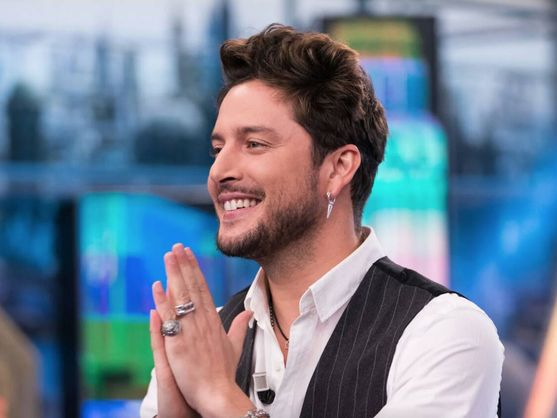

Grammy Latinos 2023
Esta es la gran pregunta que rodea a una de las noches más esperadas, y es que ¡no queda nada! La gala oficial de premios Grammy Latinos 2023 se celebra este jueves 16 de noviembre a partir de las 22:30 horas. La duración aproximada de esta noche estrellada es hasta las 1:30 horas de la madrugada.
Este año nuestro país tiene el honor de ser el anfitrión de la velada, siendo la capital sevillana quien acogerá a todos los invitados y asistentes, por lo que la gala de los premios Grammy Latinos 2023 se puede ver desde La 1 de TVE o en su plataforma online, donde podrás seguir todo lo que pasa en la alfombra roja y durante la velada que este año estará presentada por Sebastián Yatra, Danna Paola, Roselyn Sánchez y Paz Vega.
